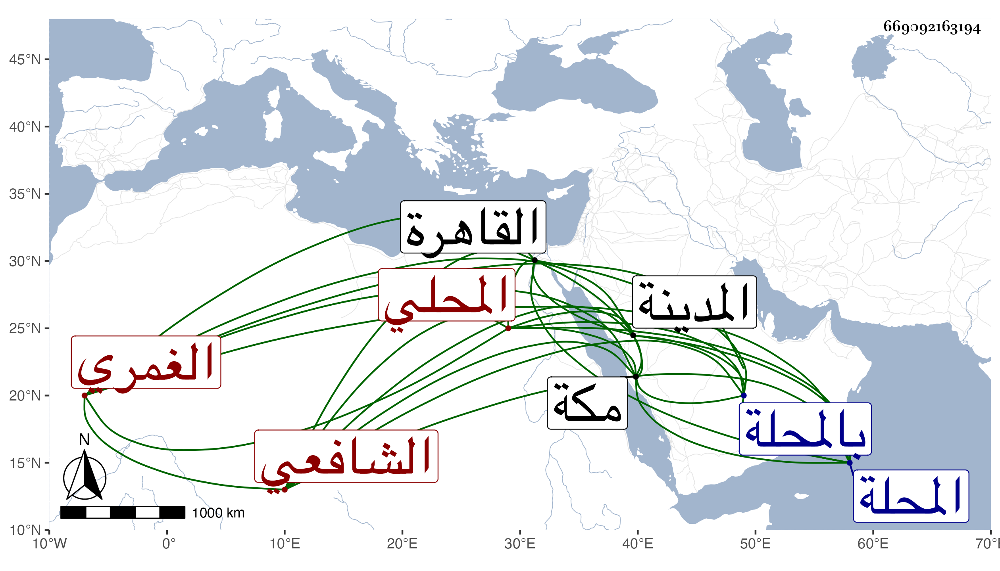

0902Sakhawi.DawLamic.ITO20230111-ara1.EIS1600.669092163194
Biography ID: 669092163194
460
أحمد بن محمد بن عمر الشهاب أبو العباس بن الشمس أبي عبد الله الغمري الأصل المحلي الشافعي ويعرف بأبي العباس الغمري . مات والده وهو صغير مراهق أو دون ذلك فنشأ فحفظ القرآن عند أبي جليدة وقرأ على شيخنا اليسير وكذا على العلم البلقيني وسمع على الشاوي والقمصي والحجازي وإمام الكاملية وآخرين بل أسمعه والده حين كان معه بمكة وهو صغير على أبي الفتح المراغي وغيره وأجاز له جماعة ، وحمل عني شيئا كثيرا في الإملاء وغيره ورأيت خير الدين ابن القصبي عرض عليه محافيظه قديما في سنة اثنتين وخمسين وانتدب لجامعي أبيه بالمحلة والقاهرة فزاد فيهما زيادات كثيرة بل وأنشأ بطرف المحلة جامعا كان موطنا للفساد ولذا عرف بجامع التوبة ، إلى غيره من الأماكن التي جددها أو أنشأها وله في كل ذلك همة عالية مع فهم جيد وتدبر وسكون وعقل واحتمال ومزيد تواضع بحيث اشتهر اسمه وارتقى صيته ، وحج غير مرة وجاور وكاد أن يأخذه العرب خارج المدينة لكنه سلمه الله بعد أن استلبوه وكتب بخطه أشياء ومن ذلك عدة من تصانيفي بل ربما جمع ولم يزل أمره في نمو مع عدم تردده لأحد من بني الدنيا وأنجب عدة أولاد أكبرهم أبو الفتح وكذا له عدة أحفاد وأسباط بورك فيهم .
